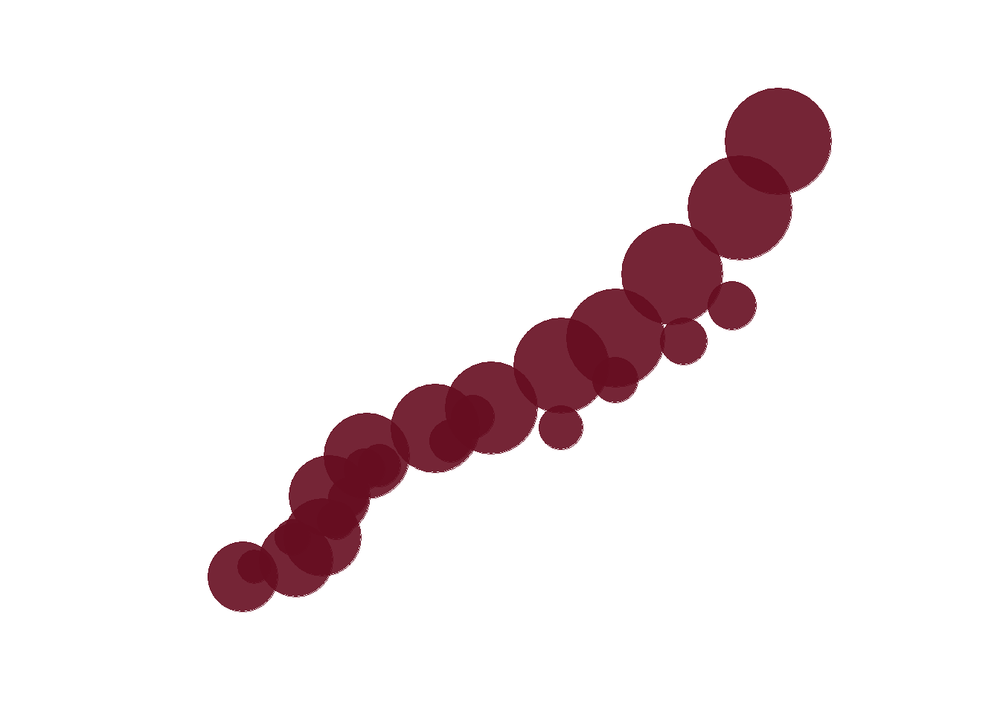

library(tidyverse) # untuk manupulasi, merapikan, & visualisasi data
library(gapminder) # untuk mengakses gapminder datasetbubble_df <- gapminder %>%
filter(continent == 'Oceania')bubble <- bubble_df %>%
ggplot(aes(x = lifeExp,
y = gdpPercap,
color = country,
size = pop)) +
geom_point(alpha = 0.9,
color = '#660d20') +
scale_size_area(max_size = 25,
guide = 'none') +
scale_x_continuous(limits = c(65, 85),
breaks = seq(65, 85, by = 5)) +
scale_y_continuous(limits = c(5000, 40000),
breaks = seq(10000, 40000, by = 10000)) +
theme_minimal() +
theme(
axis.title = element_blank(),
axis.text = element_blank(),
axis.line = element_blank(),
panel.grid.major = element_blank(),
panel.grid.minor = element_blank(),
strip.text = element_blank(),
panel.background = element_rect(fill = '#FFFFFF',
color = NA),
plot.background = element_rect(fill = '#FFFFFF',
color = '#FFFFFF')
)